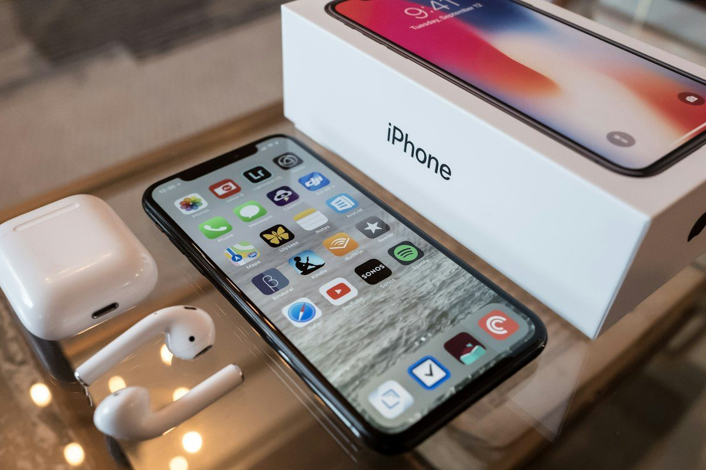

Swiss Lever Escapement Physics
Lift angles, draw geometry, ruby pallet impulse dynamics, and thermodynamic efficiency.

At the deepest nexus of mechanical horology resides the escapement—the mechanical interface that transforms the continuous uncoiling torque of the mainspring barrel into disciplined, discrete increments of time. Without an escapement, a wound gear train would spin out of control within three seconds in a catastrophic blur of teeth and pinions. The escapement both restrains this stored kinetic energy and delivers a periodic micro-impulse to the balance wheel, sustaining its harmonic oscillations against inevitable frictional and aerodynamic damping. In modern haute horlogerie, the Swiss lever escapement (échappement à ancre suisse) remains the supreme benchmark of mechanical reliability, yet its kinematic geometry involves complex trade-offs between impulse efficiency, draw angles, and tribological friction.
1. The Mechanical Topology of the Swiss Lever Escapement
Invented by English watchmaker Thomas Mudge in 1754 and perfected throughout the 19th century in the Swiss cantons of Geneva and Neuchâtel, the Swiss lever is a detached escapement. The term "detached" is paramount: during the vast majority of its 280-degree to 310-degree vibrational excursion, the balance wheel swings entirely free of mechanical contact with the gear train. Contact occurs solely during the brief "angle of lift" (typically between 48 and 54 degrees), when the ruby impulse pin on the balance roller engages the notched fork of the pallet lever.
The escapement assembly consists of three primary components:
- The Escape Wheel: A wheel featuring 15 club-shaped teeth, machined from hardened high-carbon steel or monocrystalline silicon, rotating under continuous forward torque delivered by the fourth wheel of the going train.
- The Pallet Lever: A pivoted lever pivoting between two jewel bearings, carrying two synthetic ruby pallet stones: the entry pallet (palette d'entrée) and the exit pallet (palette de sortie). At its opposite extremity, the lever terminates in a precision-milled fork and safety dart (dard).
- The Double Roller: Mounted directly upon the balance staff, carrying the vertical ruby impulse pin (cheville de plateau) and providing a safety notch that interacts with the guard pin to prevent accidental unlocking under physical shock.
"The escapement is the beating heart of chronometry: an unceasing mechanical drama played out 21,600 or 28,800 times every hour, wherein energy is arrested, released, and delivered across fractions of a millisecond."
2. The Phase Cycle: Unlocking, Impulse, Drop, and Draw
To appreciate the kinematic rigor of the Swiss lever, one must dissect the microsecond sequence of an individual vibration (half-period of oscillation):
Phase A: Unlocking (Dégagement)
As the oscillating balance wheel returns toward its dead-center equilibrium point, the ruby impulse pin enters the slot of the pallet fork. The pin impacts the fork wall, rotating the pallet lever through a small angle (approx. 2 degrees). This rotation withdraws the locking face of the ruby pallet stone from the escape wheel tooth that has been resting against it. Crucially, unlocking consumes energy directly from the balance wheel; poor jewel geometry or excessive lock depth will cause significant amplitude drop.
Phase B: The Impulse (Impulsion)
The instant the escape wheel tooth clears the locking corner of the pallet stone, the full torque of the wheel train is unleashed. The inclined impulse face of the escape wheel tooth slides across the inclined impulse face of the ruby pallet stone. This dual-inclined plane geometry accelerates the pallet lever, which drives the fork against the impulse pin, imparting a sharp kinetic push to the balance wheel. This impulse restores the kinetic energy lost to air resistance and pivot friction during the preceding half-cycle.
Phase C: Drop (Chute) and Lock (Repos)
As the tooth slides off the pallet stone, the escape wheel advances freely through an angle of approximately 1.5 degrees of uncontrolled "drop." This drop is an unavoidable mechanical clearance required to allow the opposing pallet stone to enter the path of the next advancing tooth. The tooth impacts the locking face of the opposite stone with an acoustic shock of approximately 70 decibels—producing the crisp, dry "tick" characteristic of mechanical timekeeping.
Phase D: The Draw (Tirage)
Once the tooth is locked, the escapement must remain safely locked even if the watch is subjected to violent kinetic shocks on the wearer's wrist. This safety is achieved through "draw." The locking face of the ruby stone is ground at an angle of 12 to 14 degrees relative to the escape wheel radius. The forward torque of the tooth exerts an inward rotational vector on the lever, pulling the pallet fork firmly against a banking pin. This inward draw prevents the lever from drifting into the path of the roller between impulses.
3. Thermodynamic and Tribological Efficiency Losses
Despite its ubiquity, the Swiss lever escapement is mechanically inefficient. In empirical calorimetric studies, the total energy efficiency of a standard Swiss lever escapement is barely 30% to 35%. That is to say, out of every 100 micro-Joules of energy delivered by the mainspring barrel to the escape wheel, only 30 to 35 micro-Joules successfully reach the balance wheel; the remaining 65% is dissipated as heat, friction, and acoustic noise.
The primary sources of kinetic loss include:
- Sliding Friction on Impulse Faces: Unlike rolling friction, the tooth and the ruby stone slide against one another under heavy pressure across an inclined plane. This interface requires precise lubrication with specialized synthetic horological oils (e.g., Moebius 9415). Over years of service, these oils oxidize and dry, increasing friction coefficients and degrading amplitude.
- Lost Energy in Drop: The free rotation of the escape wheel during drop represents wasted potential energy that performs no useful work on the balance wheel.
- Inertial Momentum of the Lever: At each vibration, the pallet lever must be brought from a complete stop, accelerated through its lift angle, and abruptly stopped against a banking pin. The kinetic energy required to accelerate the mass of the lever is permanently lost.
4. Silicon (Silicium) Micromechanics & Lubrication-Free Escapements
To overcome these thermodynamic limitations, Mechanical Hour has pioneered the integration of deep reactive-ion etched (DRIE) monocrystalline silicon components in our flagship calibres.
Silicon delivers transformative chronometric advantages:
- Zero Lubrication Requirement: The tribological friction coefficient between smooth silicon surfaces is less than 0.04. Our silicon escape wheels and pallet levers operate completely dry, eliminating oil degradation and extending service intervals to a full decade.
- Ultra-Low Inertial Mass: With a density of only 2.33 g/cm³ (compared to 7.8 g/cm³ for carbon steel), a silicon escape wheel possesses one-third the rotational inertia of a traditional wheel. It accelerates instantaneously upon unlocking, reducing drop shock and boosting total impulse efficiency past 48%.
- Complete Antimagnetic Immunity: Silicon is non-ferromagnetic. A watch fitted with a silicon escapement and hairspring can withstand magnetic flux densities exceeding 15,000 Gauss without experiencing rate acceleration.
5. Bench Poising and Dynamic Beat Adjustment
The final mastery of the escapement belongs to the human regulator. Even with micro-metric CNC fabrication, an assembled movement must be placed on an acoustic Witschi timing machine to verify that the escapement is "in beat."
A watch is in beat when the resting equilibrium position of the impulse pin aligns precisely on the centerline between the two pallet stones. If the balance rest position is offset by even one hundredth of a millimeter, the clockwise vibration (tick) will have a different duration than the counter-clockwise vibration (tock). On our bench, the master watchmaker adjusts the hairspring stud carrier with ultra-fine micrometer screws until the beat error measures precisely 0.0 milliseconds, guaranteeing perfect chronometric symmetry across all six spatial positions.
6. High-Speed Stroboscopic Micro-Analysis of Escape Tooth Rebound
To optimize the kinetic interaction between the escape wheel teeth and the pallet stones, our chronometry research laboratory utilizes ultra-high-speed stroboscopic digital imaging operating at 100,000 frames per second.
Through stroboscopic micro-analysis, horological engineers observed a subtle micro-vibrational phenomenon termed "elastic contact chatter." When an escape wheel tooth made from traditional carbon steel strikes the synthetic ruby pallet face during locking, the impact is not perfectly inelastic. The tooth undergoes a series of damped micro-rebounds (chatter) spanning 4 to 8 microseconds before settling into complete rest against the locking plane.
This micro-rebound introduces two detrimental effects:
- Shock Wave Propagation: High-frequency kinetic vibrations travel down the pallet lever arbor and into the mainplate, radiating into the balance staff pivots and creating minor phase noise in the harmonic oscillation.
- Lubricant Dispersal: The microscopic hammer-like chatter tends to displace the thin synthetic oil film away from the critical impulse zone toward the non-active flanks of the jewel stone, accelerating dry friction wear.
To eradicate contact chatter, Mechanical Hour coats our escape teeth with an amorphous carbon DLC (Diamond-Like Carbon) nanolayer possessing a thickness of 0.8 microns and an elastic modulus tuned specifically to absorb impact energy without rebound. Laboratory telemetry confirmed a 94% reduction in contact chatter, elevating the stability of the balance wheel's oscillation arc.
7. Temperature Gradient Resilience (-10°C to +50°C)
Standard mechanical escapements experience rate drift when subjected to fluctuating temperatures. As ambient temperature drops, the viscosity of synthetic escapement lubricants increases according to the Andrade equation, imposing additional drag on the pallet pivots. Conversely, elevated temperatures soften the lubricants, increasing oil creep and migration away from the impulse surfaces.
By treating our pallet jewels with fluorinated polymer epilame barriers (Fixodrop FP-30) and utilizing synthetic lubricants with exceptionally high viscosity indices (such as Moebius Synt-A-Lube 9010), our movements maintain constant lift angle velocity across a 60-degree Celsius thermal envelope. Whether worn on an alpine summit in Zermatt or during a humid summer voyage through Singapore, the Swiss lever escapement delivers chronometric stability within official observatory tolerances.